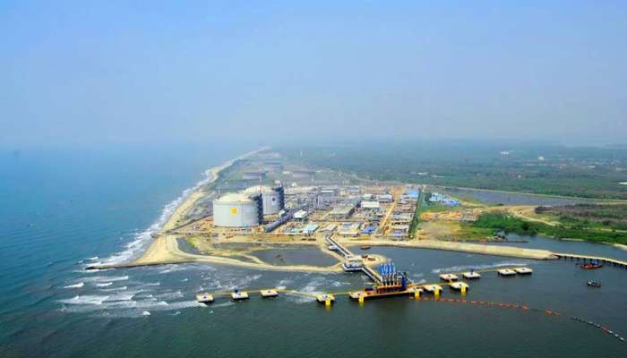

Places to visit in Ernakulam

Did you know that in ancient times, a sack of Indian black pepper was considered to be worth a man’s life? Centuries ago, merchants in Kerala were trading spices in exchange for gold and precious stones. In fact, it was the bustling spice trade that put India, especially the Malabar Coast, on the world map. In those days, Ernakulam was the centre of a historic spice route that attracted the likes of popular explorers like Vasco Da Gama and Pedro Álvares Cabral. Today, the influence of various civilizations such as Persian, Chinese, Dutch, Portuguese, Jews, French and English are evident in the art, architecture, cuisine and communities of Ernakulam. Check out the places to visit in Kochi that’ll let you live its history.
- The Museum of Mattancherry
- Vypeen Island 
- Thattekkad Bird Sanctuary
- Cherai Beach
- Hill Palace

A stroll through the lanes of Fort Kochi will definitely attract you to the rustic and old-fashioned neighbourhood of Mattancherry. It is said that back in the days, this cheri (street), was lined with mutton butchers, and so it ended up being called “Muttoncherry” which over the years evolved into “Mattancherry”. Today the place exhibits centuries-old architectures and various social and cultural imprints left behind by foreigners. Declared as a heritage site by the government, Mattancherry has been an inspiration to historians, film-makers, travellers and artistes alike. Amongst all the Ernakulam tourist places, this museum is one of the most prominent attractions.
Location: Mattancherry, Kochi, Kerala 682002
Vypeen is one of the popular places to visit in Ernakulam in one day and certainly one of the best islands in Kerala. A short and beautiful ferry ride from the city will take to this serene island which is dotted with beaches, backwaters and an array of restaurants and hotels. A desktop worthy scenery away from the bustling environment is what makes Vypeen island one of the best places to visit in Ernakulam for lovers.
Location:Kochi, Kerala

One of the first bird sanctuaries in Kerala and undeniably a haven for nature enthusiasts. In the words of Salim Ali (world famous ornithologist), Thattekkad is the “richest bird sanctuary in India” since it is home to hundreds of different endangered species of migratory birds. This thick deciduous forest has plantations of mahogany, teak, rosewood and rubber running through it. Make sure to bring along a pair of binoculars to get a glimpse of the birdlife. The best time to visit would be between November and March.
Location:Kothamangalam-Pooyamkutty Road, Nyayapally PO, Thattekad, Kerala 686681

Located on the north end of Vypin island in Kochi, Cherai beach is a 15 km stretch of wild and rugged beauty. Although not overwhelmed by hotels or major restaurants, the beach is dotted with small shacks selling local snacks like pakoras and chips. Stunning lagoons, wide paddy fields and coconut grooves adorn the road to the beach. Ernakulam sightseeing is not complete without a visit to Cherai beach
Location:Ernakulam, Kerala

Hill Palace is a prominent Heritage museum, which exhibits countless archaeological relics and belongings of the Maharaja of Kochi. This famous palace, which was built in 1865, comprises forty-nine buildings with enchanting gardens and a children’s park. It is opened to the public from 9 AM to 12 noon and from 2 PM to 4: 30 PM. Of all the majestic Ernakulam tourist places, Hill Palace is certainly one of the top attractions.
Location: Hill Palace Rd, Irumpanam, Thrippunithura, Ernakulam, Kerala 682301